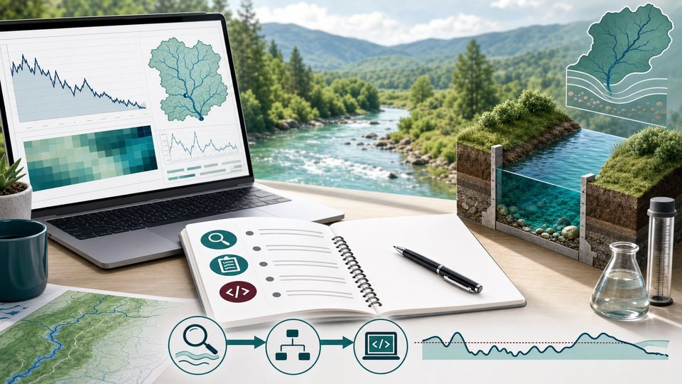
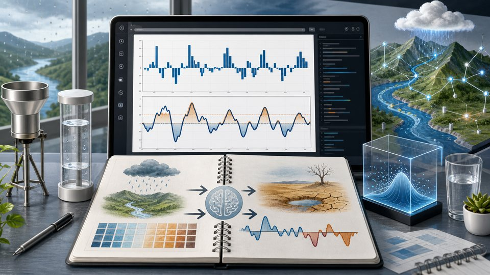
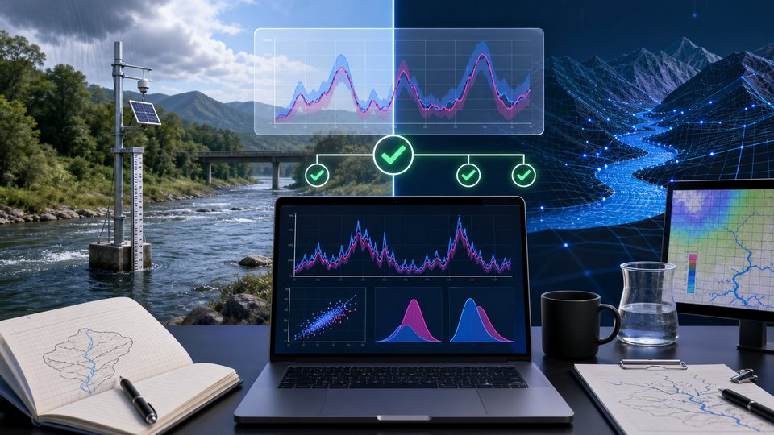
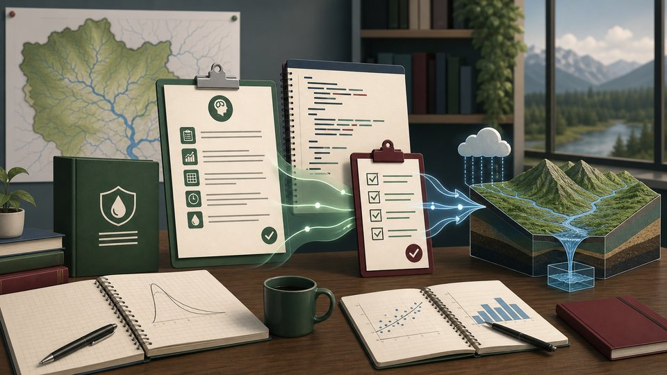
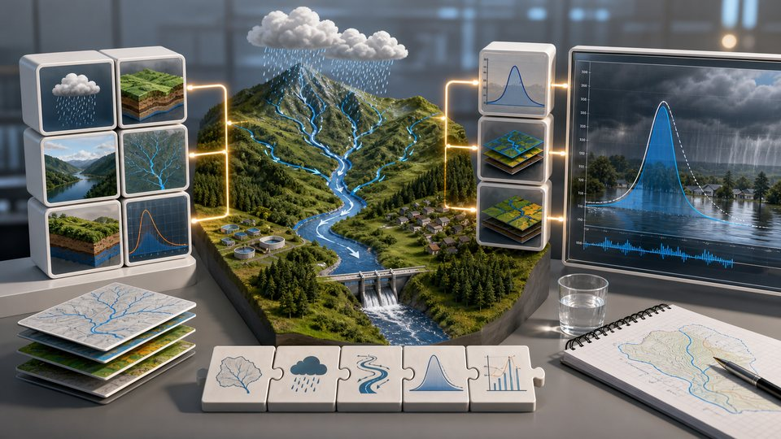
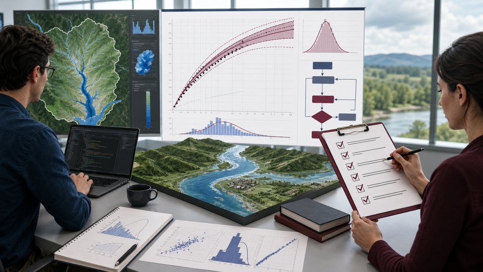
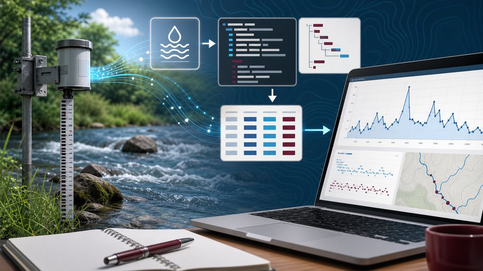
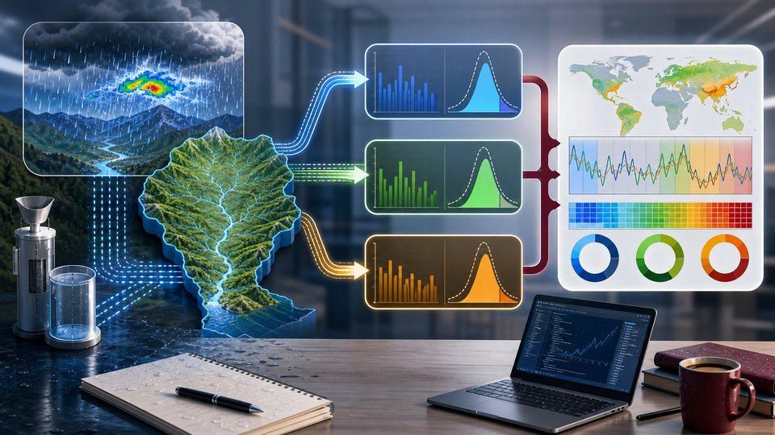

Exercise 1
Explore, Plan, Code
Practice a careful low-flow Q90/Q95 analysis workflow before editing code.
Interactive JupyterLite exercises
Please note: First notebook load may take up to a minute while Python starts in the browser.

Practice a careful low-flow Q90/Q95 analysis workflow before editing code.

Use precise context to diagnose and improve a simplified SPI calculation.

Check hydrologic model metrics with known expected values and plots.

Organize reusable project rules for consistent hydrology coding sessions.

Build repeatable skill patterns for flood-analysis tasks and checks.

Use a coder-reviewer loop for Log-Pearson Type III flood frequency analysis.
Plan safe, scoped command-line access to public National Water Model data.

Parse streamflow-style API data using documented fields and checks.

Run and summarize SPI analysis across multiple precipitation time scales.